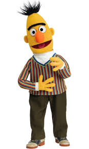
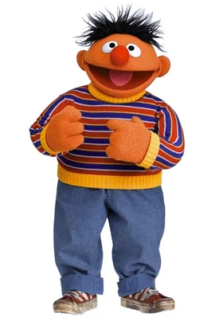

Bert
- All pizzas should have pineapple
- Loves pigeons and oatmeal
- Supports tidy rooms and good habits
- Wants more time for reading

Ernie
- Hot dogs are sandwiches
- Advocates for fun and creativity
- Supports rubber duckies everywhere
- Wants to reduce bedtime rules

The Count
- Wants to count every step you take daily
- Focuses on strong math skills
- Believes in fairness and numbers
- Every activity must be counted exactly 100 times